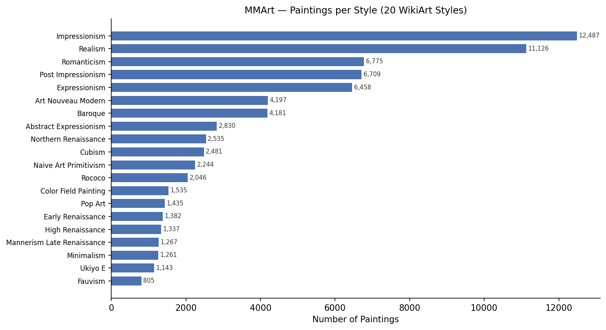
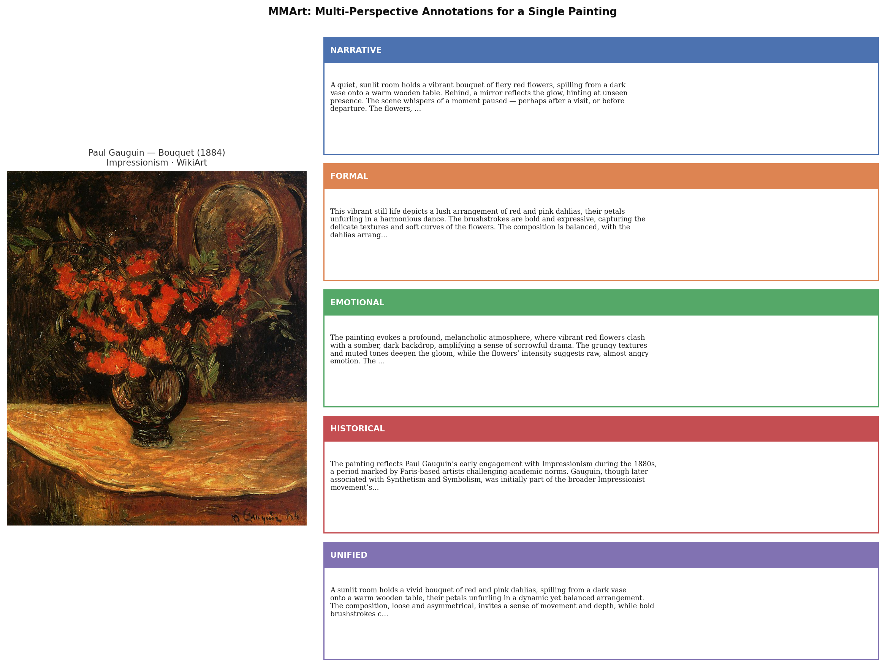
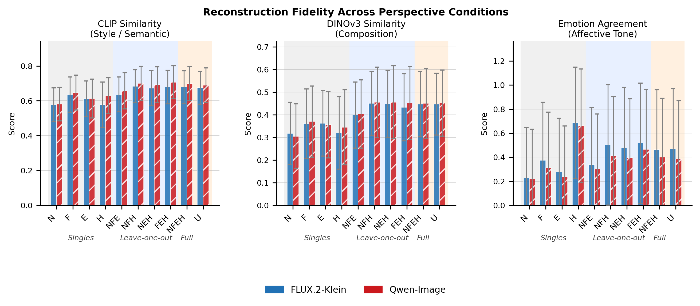
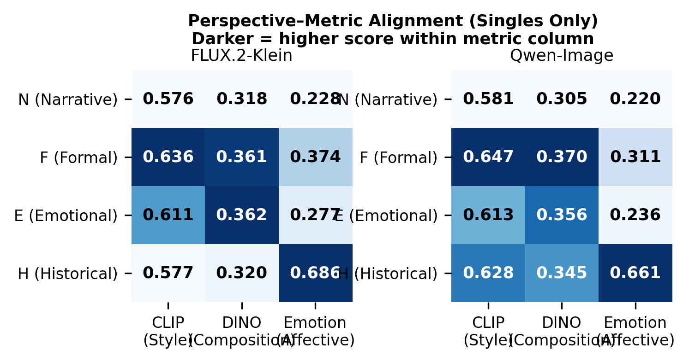
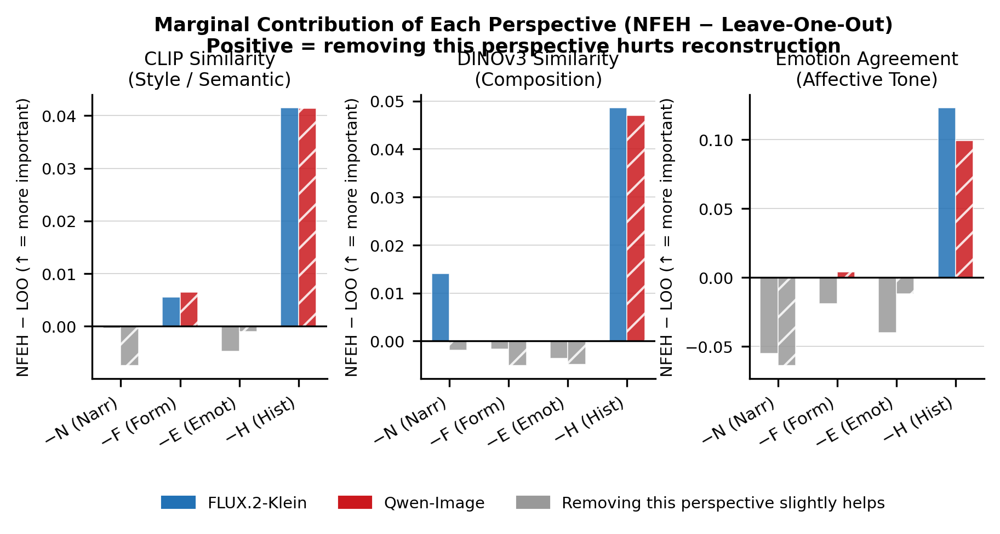
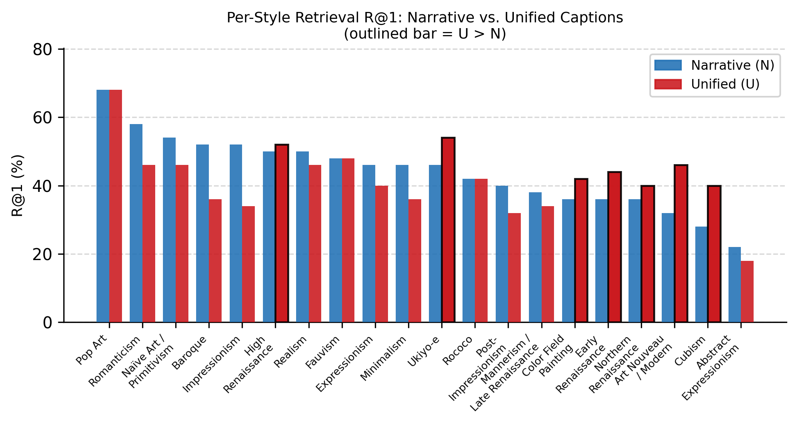
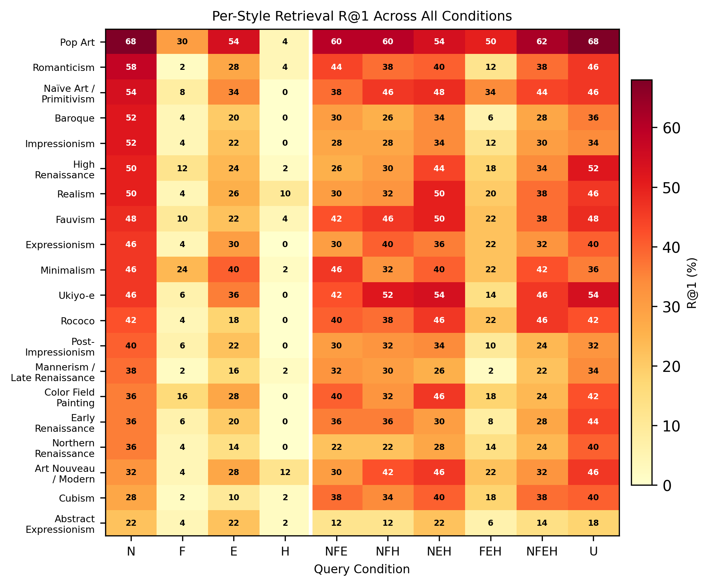
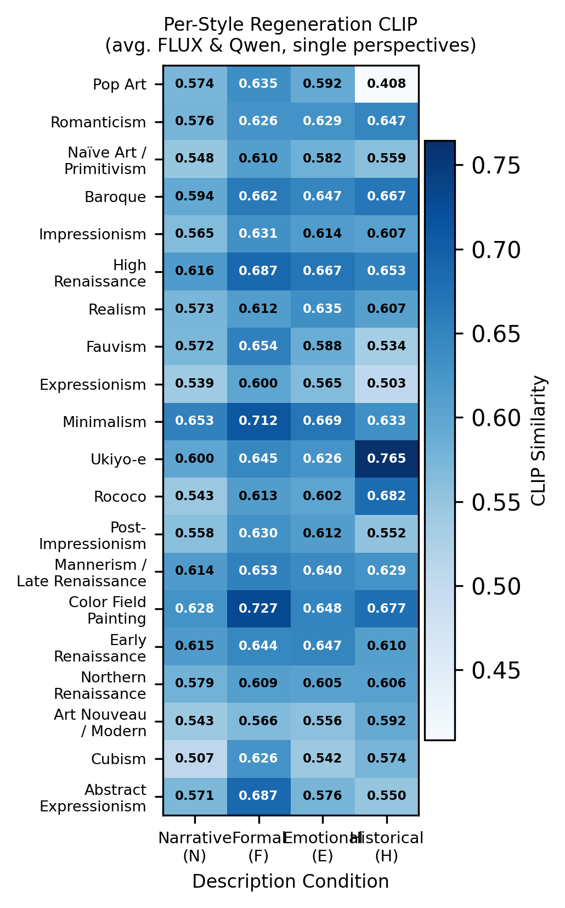

Overview
Visual artworks demand multi-layered interpretation: a single painting simultaneously invites narrative reading, formal visual analysis, emotional response, and art-historical contextualisation. Current vision-language models, however, are trained predominantly on single-perspective captions that flatten this interpretive complexity.
We introduce MMArt, a large-scale multi-perspective dataset of over 74,000 paintings annotated across four interpretive dimensions, designed to study whether different interpretive lenses encode genuinely distinct visual information — and to support models that reason about art in its full interpretive depth.

Dataset at a Glance

The Four Perspectives
Each painting is annotated with four independently generated, expert-style captions — one per interpretive dimension — plus a synthesized unified caption (U).
Narrative & Scene
Depicted entities, figures, scene composition, and story.
Qwen2.5-VL-72B-InstructFormal Analysis
Composition, brushwork, palette, light and shadow.
GalleryGPT (LLaVA-7B + LoRA)Emotional Response
Mood, atmosphere, and psychological tone.
Qwen3-VL-8B + ArtEmis-v2Historical Context
Art-historical meaning, symbolism, and cultural codes.
Qwen2.5-VL-72B + LightRAG KG
Comparison with Existing Datasets
| Dataset | Size | Narrative | Formal | Emotional | Historical | Unified |
|---|---|---|---|---|---|---|
| SemArt | 21K | ✓ | — | — | ✓ | — |
| ArtEmis | 80K | — | — | ✓ | — | — |
| Artpedia | 3K | ✓ | — | — | ~ | — |
| ExpArt | 3.5K | — | ✓ | — | ✓ | — |
| OmniArt | 432K | — | — | — | ~ | — |
| MMArt (ours) | 74K | ✓ | ✓ | ✓ | ✓ | ✓ |
Reconstruction Fidelity Experiment
We test whether each perspective encodes distinct visual information by regenerating paintings from text prompts under 10 perspective conditions and measuring how faithfully the regenerated image recovers the original across three complementary dimensions.
Scale: 1,350 paintings (50 per style × 27 styles). T2I models: FLUX.2-Klein-4B and Qwen-Image-2512.
| Condition | CLIP ↑ (Style) | DINOv3 ↑ (Composition) | Emotion ↑ (Affective) |
|---|---|---|---|
| N — Narrative | 0.578 | 0.344 | 0.224 |
| F — Formal | 0.641 | 0.401 | 0.343 |
| E — Emotional | 0.612 | 0.416 | 0.257 |
| H — Historical | 0.603 | 0.378 | 0.674 |
| NFE (no H) | 0.647 | 0.456 | 0.320 |
| NFH (no E) | 0.691 | 0.505 | 0.457 |
| NEH (no F) | 0.682 | 0.498 | 0.439 |
| FEH (no N) | 0.692 | 0.479 | 0.491 |
| NFEH (full) | 0.689 | 0.503 | 0.431 |



Key Findings
- Diagonal specialisation: F → CLIP style; E → DINOv3 composition; H → emotion agreement. Perspectives are complementary, not redundant.
- Combinatorial gain: NFEH exceeds the best single perspective on CLIP and DINOv3.
- H is hardest to replace: Removing H causes the largest drop across all three metrics.
- Synthesis dilutes emotion: H alone (0.674) > NFEH (0.431) — combining perspectives concentrates style/composition information but dilutes the affective signal.
Text-to-Image Retrieval Benchmark
We introduce a large-scale text-to-image retrieval benchmark using the full 74,234-painting gallery. Each of 1,000 query paintings is described under 10 conditions and used to retrieve the correct painting via Qwen3-VL-Embedding-2B (bi-encoder), with optional re-ranking by Qwen3-VL-Reranker-2B (cross-encoder, top-100 candidates).
Stage 1: Bi-Encoder Retrieval
| Condition | R@1 ↑ | R@5 ↑ | R@10 ↑ | MRR ↑ | NDCG@10 ↑ | MedR ↓ |
|---|---|---|---|---|---|---|
| N — Narrative | 44.0 | 65.0 | 72.6 | 0.537 | 57.64 | 2.0 |
| F — Formal | 7.8 | 16.4 | 21.7 | 0.125 | 13.93 | 145.5 |
| E — Emotional | 25.7 | 41.7 | 49.6 | 0.338 | 36.63 | 11.0 |
| H — Historical | 2.2 | 4.4 | 6.2 | 0.037 | 3.90 | 1115.5 |
| NFE | 34.8 | 57.9 | 66.0 | 0.457 | 49.85 | 3.0 |
| NFH | 35.4 | 57.0 | 64.4 | 0.456 | 49.44 | 3.0 |
| NEH | 40.1 | 62.1 | 70.8 | 0.508 | 54.86 | 2.0 |
| FEH | 17.6 | 33.9 | 43.3 | 0.257 | 29.02 | 18.0 |
| NFEH (full) | 34.2 | 56.4 | 64.8 | 0.448 | 48.88 | 3.0 |
| U — Unified | 42.2 | 65.0 | 72.5 | 0.528 | 56.95 | 2.0 |
Stage 2: After Re-Ranking (top-100)
| Condition | R@1 ↑ | R@5 ↑ | R@10 ↑ | MRR ↑ | NDCG@10 ↑ | ΔR@1 |
|---|---|---|---|---|---|---|
| N — Narrative | 52.4 | 74.0 | 80.2 | 0.625 | 66.37 | +8.4 |
| E — Emotional | 23.7 | 44.7 | 56.2 | 0.341 | 38.55 | −2.0 |
| NEH | 42.9 | 68.1 | 77.5 | 0.544 | 59.36 | +2.8 |
| NFE | 37.7 | 59.9 | 69.6 | 0.482 | 52.67 | +2.9 |
| NFEH | 35.3 | 57.4 | 67.7 | 0.461 | 50.55 | +1.1 |
| U — Unified | 39.7 | 63.8 | 71.9 | 0.507 | 55.13 | −2.5 |
Re-ranking strongly benefits N-containing conditions. Non-narrative conditions (F, H) lack the visual grounding needed to benefit from cross-modal re-scoring.
Per-Style Analysis
Aggregated numbers mask strong style-level variation. We break down both benchmarks by the 20 WikiArt styles in our benchmark sample.
Retrieval: Narrative vs. Unified by Style
U outperforms N for styles where cultural and historical context matters most — Cubism (+12%), Art Nouveau (+14%), Ukiyo-e (+8%), Early Renaissance (+8%). N dominates for styles with strong visual identity — Impressionism (+18%), Baroque (+16%), Romanticism (+12%).

Retrieval Heatmap: All 10 Conditions × 20 Styles
The H column is near-zero across all styles. Pop Art is consistently easiest to retrieve; Abstract Expressionism is hardest.

Regeneration CLIP: Single Perspectives × 20 Styles
Formal (F) dominates CLIP similarity for most styles. Exception: Ukiyo-e achieves its highest CLIP score with Historical (H = 0.765), where cultural context uniquely encodes the woodblock aesthetic.

Dataset Access
Download
Released on HuggingFace upon paper acceptance. Two splits:
| Split | Records | Description |
|---|---|---|
full | 75,336 | All paintings; null where a perspective was filtered |
experiment | 74,234 | All four perspectives present; used for all experiments |
Data Schema
{
"image_id": "Romanticism/delacroix_liberty-leading-the-people.jpg",
"title": "liberty-leading-the-people",
"artist": "delacroix",
"style": "romanticism",
"date": "1830",
"e_narrative": "A triumphant woman strides forward...",
"e_formal": "The diagonal composition surges from lower left...",
"e_emotional": "The painting radiates fierce exhilaration...",
"e_historical": "Painted in the wake of the July Revolution...",
"e_unified": "Liberty Leading the People captures the explosive...",
"dominant_emotion": "awe",
"n_perspectives": 4
}
Citation
@inproceedings{wang2026mmart,
title = {MMArt: A Multi-Perspective Multimodal Dataset for Visual Art Understanding},
author = {Wang, Shuai and others},
booktitle = {Under submission to ACM International Conference on Multimedia},
year = {2026},
}